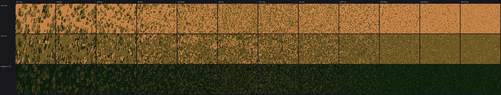
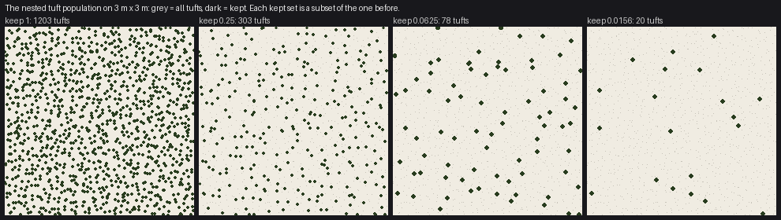
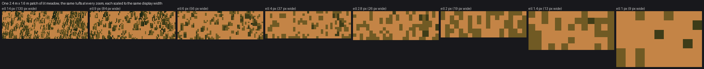

The handoff: one number per mark, every choice dithered
Part 1 of the grass-lod tutorials. Code: code/grasslod/marks.py, functions tuft_population and paint_tufts.
A painter's marks change kind with distance. Ferrari's grass is strands up close, ticks a little farther, holes and stipple farther still, then tone on a landform. In one still picture that's easy: each region gets the mark its distance calls for. In a continuous zoom it's the whole problem, because at some zoom every region has to become the next kind of mark, and if it does so all at once, the viewer sees it happen.
This page is how I made that change invisible. It's not specific to grass. Any material painted with marks (scree, foliage, snow crust, ripples) can use it as is.

The grass vocabulary as a function of stroke length ell, flat lit ground (two top rows) and shadowed ground (bottom), golden hour. From left, 14 px: strands with dark gaps. 4 px: short strokes. 2–1.4 px: a dense field of 1×2 ticks. 0.7 px down: isolated holes on a flat base. Nothing on this sheet switches at a column boundary; every change is spread over a range.
Step 1: make marks objects in the world
A mark is not a pixel pattern; it's a thing standing on the ground. In grass it's a tuft, at a world position, with sixteen random numbers of its own that never change:
U = np.stack([lat(IX, IY, sd + 10 + j) for j in range(16)]) # tuft_population, marks.py
lat is a table-lookup hash of the tuft's integer grid cell. The same tuft has the same numbers in every frame, at every zoom, in every camera. This is what makes everything else possible: a decision made against U[k] is a decision the tuft owns.
Step 2: pick the one number
Find the single continuous quantity that decides how a mark should look. For grass it's the blade's projected length in pixels:
ell = h * ppm * np.sqrt(c * c + (mp["lean_top"] * s ** 3) ** 2)
h is the local blade height in metres (from species, grazing, clumps), ppm the zoom, c and s the cosine and sine of the camera's elevation. The second term is the lean of blades seen from above, so a top-down camera still sees tufts as small radiating marks instead of dots.
This one number replaces "distance", "zoom level", "LOD tier" and "camera type". A tall hay tuft far away and a turf tuft nearby with the same ell are painted the same way, which is right: the painting only knows how many pixels it has.
Step 3: every discrete choice is stochastic rounding against the mark's own number
This is the rule. Whenever the painter must make a whole-number or yes/no decision that depends on ell, write it as floor(f(ell) + u) or u < p(ell), where f and p are smooth and u is one of the mark's own numbers.
From paint_tufts:
# how many blades: ~ell/1.6, rounded by the tuft's own number
nb = np.clip(np.floor(ell / mp["blade_div"] * (1 + 0.8 * tus) + U[2]), 1, mp["max_blades"]).astype(int)
# each blade's length in whole pixels, rounded by that blade's own number
L = np.floor(ell * (0.65 + 0.35 * uj[0]) + uj[1]).astype(int)
L = np.where(has, np.maximum(L, 1), 0) # a kept tuft always leaves at least a dot
# middle distance: at least a 1x2 tick, decided per blade, fading in over ell 0.6-1.1
p_tick = np.clip((ell - 0.6) / 0.5, 0, 1)
L = np.where(has & (uj[1] < p_tick), np.maximum(L, 2), L)
# dark stroke or light, from where the tuft sits in its light family
light = ul < p_light
# deep darks only once strokes are long enough; each blade crosses over at its own ell
a2 = np.clip((ell - 2.0) / 3.0, 0, 1)
a3 = np.clip((ell - 4.0) / 4.0, 0, 1)
dark_off = np.where(ud < 1 - 0.6 * a2, -1.0, np.where(ud < 1 - 0.12 * a3, -2.0, -3.2))
(uj[q] and ul, ud are per-blade numbers derived from the tuft's U by np.modf(U[k] * constant), so each blade of a tuft has independent ones.)
Read the tick rule as a picture. At ell = 0.6 no blade is a tick. At ell = 0.85, each blade whose uj[1] is below 0.5 is a tick, and the others are still dots. At ell = 1.1 every blade is a tick. Across the frame, the change from dots to ticks is spread over a 1.8× range of zoom, and inside that range each individual tuft changes exactly once, at its own moment. A viewer sees ticks thicken in, not a switch.
What happens if you don't. My first zoom had one hard threshold left, and it wasn't even in a stroke rule. It was in the bookkeeping that estimates how many pixels a tuft covers, used to decide how many tufts to draw:
wid = np.where(ell >= 3, 1.9, np.where(ell >= 1.5, 1.2, 1.0)) # before

Pop metrics of that first zoom (red: tone change per frame). One spike at 12.5 px/m, where ell crossed 3 and the estimated width jumped, so the number of tufts drawn jumped by half between two frames.
wid = 1.0 + 0.9 * np.clip((ell - 1.0) / 3.0, 0, 1) # after: continuous, no step, no pop
The max tone pop fell from 2.9 to 0.7 levels. The lesson: audit every where, every >=, every integer cast of anything that depends on the zoom, including code whose output nobody ever sees directly.
Step 4: a population that loses marks one at a time
Zooming out, a region has more ground in it, and you can't draw every tuft (at 0.3 px/m, one pixel holds thousands). You have to keep a fraction. If you choose that fraction afresh each frame, the survivors change every frame and the image boils. The kept set at a lower fraction must be a subset of the kept set at a higher one.
tuft_population does this with a hierarchy of jittered grids. Level k has one tuft per cell of size s0 · 2^k and gives its tufts ranks in [4^-(k+1), 4^-k). "Keep a fraction K" means "keep every tuft with rank below K":
cs = s0 * 2 ** k # cell size at level k
lo_rank = 4.0 ** -(k + 1)
...
ur = lat(IX, IY, sd)
rank = lo_rank * (1 + 3 * ur) # ranks of level k span [4^-(k+1), 4^-k)
m = rank < keep

3 m × 3 m of meadow at four keep fractions. Grey is every tuft; dark is kept. Each set is a subset of the one before, and the survivors are spread evenly (each coarser level is its own jittered grid), so the thinned field never clumps or leaves holes.
Two things fall out of this for free. Levels whose ranks are all above K are never enumerated, so at a distance only the coarse levels are generated and the cost stays flat. And K itself is smooth in the zoom, so as you pull back, tufts drop out one by one in rank order, lowest last.
The same rank test is where anything else that thins the marks goes. My "detail at edges" rule (marks crowd crests and thin in bodies at a distance) and clump density both multiply the threshold instead of adding a separate filter:
dsel = rank < pop.get("keep", 1.0) * kap # kap: smooth, from crest and clump fields
So a tuft on a crest survives longer than one in a hollow, and it still drops out smoothly.
Step 5: paint thousands of marks far-to-near without a loop per mark
Every tuft emits pixels (blade, partner stem, dark gap columns) into flat arrays. To get painter's order in numpy without looping over tufts, sort tufts far-to-near, give each emitted pixel an integer key that grows with nearness (tuft index × 8 + layer), and let np.maximum.at pick the winner per pixel:
order = np.argsort(-y, kind="stable") # far first
key0 = np.arange(n) * 8 + 8 # tuft i, layers: 0 gap, 1 partner, 2 blade
...
np.maximum.at(prio, (Y, X), K) # highest key per pixel wins
win = prio[Y, X] == K
X, Y, VV = X[win], Y[win], VV[win]
canvas_v[Y, X] = VV
A near tuft overwrites a far one, and a tuft's blade overwrites its own gap column. It's deterministic, which matters (see testing): the same tufts always produce the same pixels.
A warning from experience. This style of code keeps twenty parallel arrays per tuft (position, value, crest, clump, screen column...) and filters and sorts them together in list comprehensions. Twice I left one array out of a sort or a filter. Each time, some tufts read another tuft's data: a silhouette test looked at the wrong screen column, a stroke took the wrong clump's light. Every frame looked plausible and the zoom boiled. Only the pan test found them. If you use this pattern, put the arrays in one dict or a structured array and filter the whole thing.
What it looks like

One 2.4 m × 1.6 m patch of lit meadow at eight stroke lengths, each rendered at its true pixel size (130 px wide down to 9) and scaled up to the same display width. The same ground, keeping fewer tufts as it shrinks: strands, then short strokes, then ticks, then single holes.
And the proof that it hands off: the golden zoom and its metrics. Tone change per frame max 0.53, mean 0.15 luminance levels, over 96 frames and 100× of zoom.


Checklist for your material
- Marks are world objects with their own fixed random numbers.
- One continuous number (size on screen) decides how a mark is drawn.
- Every discrete decision is
floor(f(size) + u)oru < p(size), withf,psmooth anduthe mark's own. - No
where(size >= threshold, ...)anywhere that affects the image, including coverage bookkeeping. - The population thins by a nested rank, so kept sets are subsets of each other.
- Anything else that thins marks multiplies the rank threshold.
- Painter's order is deterministic.
- Then prove it with the tests: a smooth-looking frame proves nothing.